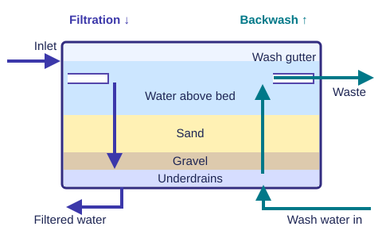

تبدأ بإيه؟
| الموضوع | ظهر في | اللي تتمرن عليه |
|---|---|---|
| الترسيب الدائري | 2022 س2 · 2023 س3 · 2025 س4 | صمّم منطقتين في الـClariflocculator، واعكس الحساب لو الأبعاد معطاة. |
| الفلاتر السريعة | 2022 س3 · 2023 س4 · 2025 س2 | عدد الشغال والاحتياطي، الغسيل العكسي، ورسم الفلتر ومكانه في المحطة. |
| أعمال السحب وتصرف التصميم | 2023 س1–2 · 2025 س1 و3 | ارسم سلسلة السحب، احفظ أسباب اختيار الموقع، وحدد أقل سعة بين المواسير والطلمبات. |
| النظري القصير | س1 في التلات سنين | الاستهلاك، كفاءة الترسيب والترشيح، والترويب والترسيب الكيميائي. |
قبل التعويض اكتب الوحدة جنب كل تصرف. لو المحطة شغّالة 20 h/d، اقسم حجم اليوم على 20 عشان تطلع تصرف ساعة التشغيل. لو بتحوّل معدل تحميل مُعرَّف على أساس 24 ساعة لوحدة الساعة، اقسم المعدل نفسه على 24 زي أمثلة المحاضرتين 3 و4.
الدراسات الأولية واستهلاك المية
بالمصري
قبل ما تصمّم، اسأل المية جاية منين، جودتها إيه، المشروع هيتصمّم لمدة قد إيه، الفرد هيستهلك كام، والسكان هيبقوا كام في آخر المدة. الاستهلاك بيتغيّر خلال اليوم والسنة، فالتصميم بيبدأ من التصرف المناسب لكل وحدة.
Basic studies & demand
Identify the water source and quality, choose the design period, estimate water use, and forecast population. Convert average demand to the relevant peak before sizing each unit.
| الحالة | المدى × المتوسط | القيمة المختارة في السلايد |
|---|---|---|
| أقصى شهر Maximum monthly | 1.1–1.5 | 1.4 |
| أقصى يوم Maximum daily | 1.2–1.8 | 1.8 |
| أقصى ساعة Maximum hourly | 1.5–2.5 | 2.5 |
| الأقل Minimum | 0.5–0.8 | 0.7 |
P عدد السكان، وq_avg استهلاك الفرد بوحدة L/(cap·d)، وk_mm معامل أقصى شهر. Q_avg وQ_mm وQ_d متوسط وأقصى شهر وتصرف التصميم بوحدة m³/d. w_p ساعات التشغيل في اليوم وQ_h تصرف ساعة التشغيل. لو Q_d متدي صراحةً استخدمه مباشرة. 1 m³ = 1000 L.
مراجعة سريعة لتوقع السكان والحريق
الحسابية بتضيف زيادة ثابتة كل سنة. الهندسية بتضيف زيادة ثابتة على لوغاريتم السكان. طريقة النمو بتضرب في معامل سنوي، وطريقة الكثافة مناسبة للمدن الجديدة. في مثال 2010–2050، ابدأ بـ125,000 نسمة و40 سنة.
P_f / P_p سكان المستقبل والحاضر، وΔt فرق السنين، وK_a متوسط الزيادة السنوية بالأشخاص، وK_g متوسط تغير اللوغاريتم في السنة، وr نسبة النمو السنوي بالمية. نتايج التعويض 187,400 / 246,735 / 276,005 نسمة بالترتيب باستخدام K_g = 0.017 زي السلايد. القيمة المطبوعة للهندسية في السلايد 246,718، والفرق بسيط بسبب التقريب في الحساب.
حسب افتراض الحريق في المحاضرة، الهيدرنت 60 m³/h لمدة ساعتين. احسب 120 m³ لكل 10,000 نسمة حتى 500,000 نسمة، و240 m³ لكل 10,000 لو العدد أكبر.
محاضرة 1 · صفحات 3–13 من ملف المحاضرة.
أعمال سحب المياه السطحية
بالمصري
المأخذ يجمع المية ويحجز العوالق الكبيرة بالشبك. المواسير توصلها للبيارة، والبيارة توزّعها على الطلمبات. الطلمبات ترفع المية الخام، وخط الطرد يسلّمها لأول حوض في المحطة.
Collection works
The intake screens raw water. Conduits carry it to the sump, which feeds the pumps evenly. Low-lift pumps add head, and the transmission line delivers water to the first treatment unit.
- River / canalSurface source
- Intake structureCollect and screen
- Intake conduitsCarry raw water
- Raw water sumpFeed pumps evenly
- Low-lift pumpsRaise the water
- Transmission lineDeliver to plant
| النوع | إمتى تستخدمه؟ |
|---|---|
| Pipe intake | نهر واسع وعميق، منسوب متغيّر أو شاطئ ملوّث. |
| Shore intake | ترعة ضيقة وضحلة، والشاطئ نضيف. |
| Submerged intake | ترعة ضيقة وعميقة، والشاطئ ملوّث. |
| Tower intake | مشروعات كبيرة على بحيرة أو نهر فيه فرق مناسيب كبير. |
Q_s تصرف التصميم بـm³/s، وA_p مساحة مقطع ماسورة واحدة بـm²، وD قطرها بالمتر، وn عدد المواسير، وv السرعة بـm/s. اختار قطر فعلي وشيّك على 0.6–1.5 m/s في التشغيل و≤ 2.5 m/s عند خروج ماسورة واحدة. عدد مواسير المأخذ ≥ 2.
مثال المحاضرة · التصميم من 220,000 نسمة لحد خط الطرد
- الاستهلاك 200 L/(cap·d)، إذن Q_avg = 44,000 وQ_mm = 61,600 وQ_d = 67,760 m³/d = 0.7843 m³/s على 24 ساعة.
- ابدأ بماسورتين عند 1 m/s، يطلع قطر نظري 0.707 m. اختار 700 mm وشيّك 1.02 m/s عادي و2.04 m/s مع خروج ماسورة.
- 4 طلمبات شغّالة تحتاج كل واحدة 196.1 L/s، اختار 200 L/s وأضف 2 احتياطي (50%). للبيارة استخدم زمن 5 دقائق، فيطلع 235.3 m³. عند طول 15 م وعرض 4 م يبقى العمق 3.92 m، أكبر من 53 − 0.11 − 50 + 0.5 = 3.39 m.
- خط طرد واحد عند سرعة مبدئية 1.2 m/s يطلع قطره حوالي 0.91 m. اختار 900 mm وشيّك 1.23 m/s. الرأس الساكن 75 − 53 + 5 = 27 m، والفواقد حسب المثال 0.11 + 9.62 = 9.73 m، يبقى الرأس الكلي 36.73 m.
h_f فواقد احتكاك وh_s فواقد ثانوية بالمتر، وL طول الماسورة، وf معامل دارسي، وK معاملات الفواقد الثانوية، وg = 9.81 m/s². لخط الطرد، السلايد بيستخدم Hazen–Williams بـh_f = 10.675 L (Q_s/C)^1.852 D^−4.87، وC = 120 في المثال. اجمع فواقد المأخذ والطرد في الرأس الديناميكي.
محاضرة 2 · صفحات 2–12، خصوصًا ص3 للموقع وص7–9 للتصميم.
الترسيب والترويب والـClariflocculator
بالمصري
الحبيبات التقيلة بتنزل بالجاذبية لو المية هديت. العوالق الدقيقة محتاجة مادة مروِّبة تقلّل استقرارها، وبعدين تقليب هادي يجمعها في كتل أكبر. في الحوض الدائري المشترك، التلبيد في القلب والترسيب في الحلقة اللي حواليه.
Sedimentation and flocculation
Gravity settles heavy particles. Rapid mixing spreads the coagulant and destabilizes fine particles. Gentle mixing grows flocs. In a clariflocculator, the flocs settle as the water moves outward to the weir.
حوض الترسيب المثالي
المدخل يوزّع المية بالتساوي، منطقة الترسيب تهدّيها، الهدّار يسحب المية الصافية ويضبط المنسوب، والقاع المائل يجمع الحمأة ناحية الحفرة. في المستطيل السريان أفقي، وفي الدائري شعاعي من المركز للمحيط.
افترض سريان طبقي بسرعة أفقية منتظمة، من غير مناطق ميتة أو مسارات قصيرة، مع توزيع كويس عند المدخل والمخرج.
| المتغير | المركز / Inner | الخارج / Outer |
|---|---|---|
| زمن المكوث | 20–40 دقيقة | زمن التلبيد + 2–4 ساعات ترسيب لحساب الحجم الكلي |
| العمق | d_i = 2–3 m | d_o = d_i + 0.5–1 m |
| القطر والعدد | D_o ≤ 40 m، وعدد الأحواض n ≥ 2. | |
| التحميل والسرعة | SLR = 25–40 m³/(m²·d)، وHLOW = 150–300 m³/(m·d)، وv_hz ≤ 0.3 m/min، ونسبة حجم المركز 15–25%. | |
T_i زمن التلبيد وT_s زمن الترسيب بالساعات. V_i, V_o حجما المركز والإجمالي، وA_i, A_o المساحتان الكليتان لكل الأحواض. D_i, D_o قطرا المركز والخارج لكل حوض وd_i, d_o العمقان. SLR تحميل المساحة الفعلية للترسيب، وHLOW تحميل طول الهدّار، وv_hz السرعة الأفقية؛ إضافة المتر في معادلتها من طريقة المحاضرة. في حوض الترسيب العادي استخدم كل المساحة المتاحة للترسيب.
محاضرة 3 · ص3–7 للترسيب العادي، ص8–13 للترويب، وص14–15 للتصميم.
الترشيح والغسيل العكسي
بالمصري
الفلتر بيشيل العوالق اللي فاضلة. في الفلتر السريع المية بتنزل خلال طبقات الرمل والزلط، ومع الوقت الفراغات بتتسد وفقد الضغط يعلى. وقت الغسيل اقلب اتجاه المية لأعلى، واجمع المية الوسخة في مزاريب الغسيل. بعد الغسيل وجّه أول ناتج للصرف لحد ما الجودة ترجع.
Rapid sand filtration
Water flows down through sand and gravel to the underdrains. When head loss rises, reverse the flow to flush trapped solids into the wash gutters. Send the first filtrate to waste before returning the unit to service.

| البند | Slow sand | Rapid sand |
|---|---|---|
| المعدل | 3–8 m³/(m²·d) | 100–200 m³/(m²·d) |
| مكان الحجز | الطبقة السطحية Dirty skin | خلال عمق الرمل |
| التنضيف | كشط الطبقة العليا | غسيل عكسي |
| زمن التنضيف | 8–30 يوم | 25–35 دقيقة للعملية كلها |
| التشغيل بين غسلتين | 2–6 شهور | 12–36 ساعة |
| المعالجة قبل الفلتر في الرسم | ترسيب عادي | ترسيب كيميائي |
الحجز الميكانيكي، والترسيب بين الحبيبات، والامتزاز، والتأثير الكهربي، والتأثير البيولوجي هي آليات الترشيح في السلايد. لما العكارة منخفضة، المحاضرة بتعرض Direct filtration؛ مع حمل عوالق أعلى استخدم ترسيب قبل الفلتر لتقليل الانسداد.
A_work المساحة المطلوبة للشغال بالمتر المربع، وL, B طول وعرض الفلتر. ROF_h, ROF_d معدل الترشيح على أساس الساعة واليوم، وROW معدل الغسيل بوحدة m³/(m²·h)، وt_w مدة الغسلة بالدقايق، وn_w عدد الفلاتر اللي بتتغسل، وf_w مرات الغسيل لكل فلتر في اليوم، وW_d إجمالي مية الغسيل في اليوم. قرّب عدد الفلاتر الشغّالة لفوق، وبعدين زوّد 2 احتياطي لو الشغّال ≤10، أو 4 لو أكتر من 10. لو مفيش مدة تشغيل معطاة واستخدمت ROF_d مباشرة، اقسم تصرف اليوم على المعدل اليومي.
خطوات التشغيل والغسيل · ص10
- V2 + V3 لتفريغ الفلتر، واقفل دخول المية V1.
- V4 لهوا مضغوط يحرّك الرواسب.
- V5 + V3 لمية الغسيل المضغوطة وصرفها من المزاريب.
- V1 + V6 لإرجاع الترشيح مع توجيه المية الأولى للصرف.
- V1 + V2 للتشغيل العادي. باقي المحابس مقفولة في كل خطوة حسب جدول المحاضرة.
محاضرة 4 · ص1–4 للمبادئ والكفاءة، وص5–13 للأنواع والتشغيل والتصميم.
اتدرّب على أسئلة السنين
الأسئلة بالإنجليزي المبسّط. جرّب الحل على ورقة، وبعدين افتح خطوات الحل. الدرجات زي الورقة الأصلية.
امتحان 2022
س1 · درجتين. ناقش اتنين من عوامل الاستهلاك، كفاءة الترسيب، الترويب، التطهير وطرقه.
س2 · أقصى سكان تخدمهم 4 مرسّبات (8 درجات)
Four circular clarifiers are 25 m in diameter and 3 m deep. Average use is 200 L per person per day. Maximum monthly demand is 1.5 times average demand. Find the maximum population served.
اظهر الحل · السعة الحاكمة
- اعتبر تشغيل 24 ساعة لأن السؤال سايب مدة التشغيل. استخدم حدود تصميم الترسيب العادي في محاضرة 3 ص7. مساحة الأحواض 4π(25²)/4 = 1,963.50 m²، والحجم 5,890.49 m³، والهدّار المحيطي الكلي 4π × 25 = 314.16 m.
- السعة من تحميل السطح 40 × 1,963.50 = 78,540 m³/d، ومن الهدّار 300 × 314.16 = 94,248 m³/d. من أقل زمن مكوث (ساعتين) Q_d = (5,890.49 ÷ 2) × 24 = 70,686 m³/d. زمن المكوث هو الحاكم.
- شيّك عند التصرف الحاكم. SLR = 36 m³/(m²·d)، وHLOW = 225 m³/(m·d). مساحة المقطع حسب السلايد 4π × 12.5 × 3 = 471.24 m²، فالسرعة (70,685.83 ÷ 1,440) ÷ 471.24 ≈ 0.104 m/min، تحت 0.3 m/min.
- ارجع للسكان عن طريق Q_d = 1.1 × 1.5 × P × 200 ÷ 1,000. النتيجة 214,199 نسمة كحد أقصى بعد التقريب لتحت. لو افترضت سعة المحطة مساوية لأقصى شهر مباشرةً، من غير معامل 1.1 اللي في المحاضرة، النتيجة 235,619 نسمة.
س3 · تصميم الفلاتر والغسيل والرسم (10 درجات)
A plant serves 200,000 people and runs 20 h/day. Average use is 200 L per person per day and the maximum monthly factor is 1.5. Design rapid sand filters at 150 m³/(m²·day). Wash at five times the filtration rate, for 10 minutes once a day per filter. Find the wash-water percentage and sketch the filter.
اظهر الحل · المساحة والشغّال والاحتياطي
- Q_avg = 200,000 × 200 ÷ 1,000 = 40,000 m³/d، وQ_mm = 60,000 m³/d. باستخدام معامل المحاضرة Q_d = 66,000 m³/d، إذن Q_h = 3,300 m³/h.
- حوّل معدل الترشيح ROF_h = 150 ÷ 24 = 6.25 m³/(m²·h)، إذن المساحة المطلوبة 3,300 ÷ 6.25 = 528 m².
- اختار 8 × 6 m (48 متر مربع ونسبة طول لعرض 1.33). 528 ÷ 48 = 11 شغّال. بما إن 11 أكبر من 10، أضف 2 للغسيل و2 للصيانة، فيبقى الإجمالي 15 فلتر.
- معدل الغسيل حسب السؤال ROW = 5 × 6.25 = 31.25 m³/(m²·h). غسلة الوحدة 31.25 × (10 ÷ 60) × 48 = 250 m³. اغسل الـ15 مرة لكل وحدة على مدار اليوم، فيطلع 3,750 m³/d. النسبة لسعة التصميم 3,750 ÷ 66,000 × 100 ≈ 5.68%.
- للجزء (ب)، ارسم قطاع الفلتر وسمّي المدخل، المية فوق الرمل، الرمل، الزلط، المصارف السفلية، المخرج، مدخل الغسيل ومزاريب الصرف. حط سهم الترشيح لأسفل وسهم الغسيل لأعلى.
امتحان 2023
س1 · 3 درجات. ناقش اتنين من الدراسات الأولية، اختيار المأخذ، الترسيب الكيميائي، كفاءة الترشيح.
س2 · 3 درجات. ارسم خط أعمال السحب للمياه السطحية واكتب وظيفة كل عنصر. لو عايز تفصيل للمأخذ، ضيف إن الشبك بيحمي المواسير من الانسداد والمأخذ بيحمي ميول الجسور حسب المحاضرة.
س3 · 8 درجات. مسألة تصميم الترسيب المشترك بسعة 90,000 م³/يوم.
س4 · كفاية 8 فلاتر ومية الغسيل (6 درجات)
A plant has eight rapid sand filters, 8 m × 6 m each. Can it serve 250,000 people at 180 L per person per day? Use Qmm = 1.4 Qavg, Qd = 1.1 Qmm and filtration at 200 m³/(m²·day). Find any extra units needed and the wash-water percentage. Each filter is washed once daily at 25 m³/(m²·h) for 10 minutes.
اظهر الحل · مع فصل الشغّال عن الاحتياطي
- Q_avg = 250,000 × 180 ÷ 1,000 = 45,000 m³/d، ثم Q_mm = 63,000 m³/d، ثم Q_d = 69,300 m³/d.
- مساحة الوحدة 48 m² وسعتها 48 × 200 = 9,600 m³/d. المطلوب 69,300 ÷ 9,600 = 7.21875، يعني 8 شغّالة.
- لو الثمانية دول إجمالي المحطة، خصّص 1 للغسيل و1 للصيانة حسب السلايد. سعة الستة الشغّالة 57,600 m³/d وده أقل من المطلوب. زوّد فلترين، ويبقى الإجمالي 10 (8 تشغيل + 2 احتياطي).
- مية غسلة الوحدة 25 × (10 ÷ 60) × 48 = 200 m³. بعد التوسعة 10 × 200 = 2,000 m³/d، والنسبة لسعة التصميم 2,000 ÷ 69,300 × 100 ≈ 2.89%.
لو بتفحص السعة اللحظية وكل الفلاتر شغّالة مع بعض، الثمانية يعدّوا 76,800 m³/d وده يكفي من ناحية التصرف. لو حسبت غسيل الثمانية الحاليين فقط يطلع 1,600 m³/d، أو 2.31% من 69,300 m³/d. اكتب تعريفك لسعة المحطة في الحل.
امتحان 2025
س1 · 4 درجات. ناقش اتنين من عوامل الاستهلاك، اختيار المأخذ، مزايا الترسيب الكيميائي، كفاءة الترشيح.
س2 · 3 درجات. ارسم خط محطة الترشيح السريع واكتب غرض كل مرحلة.
س3 · أقصى سكان من المواسير والطلمبات (5 درجات)
A plant has four 500 mm intake conduits and six raw-water pumps rated at 200 L/s each. Find the maximum population at 250 L per person per day and Qmm = 1.4 Qavg.
اظهر الحل · قارن السعات وحدد العنصر الحاكم
- مساحة كل ماسورة π × 0.5² ÷ 4 = 0.19635 m². أقصى تصرف مع أربع مواسير عند 1.5 m/s هو 1.17810 m³/s. حد خروج واحدة 3 × 0.19635 × 2.5 = 1.47262 m³/s. الأقل يحكم المواسير.
- لو الستة إجمالي المركّب، أكبر عدد شغّال مع احتياطي لا يقل عن 50% من الشغّال هو 4 شغّال + 2 احتياطي، زي مثال المحاضرة. سعة الطلمبات 4 × 0.200 = 0.800 m³/s. يبقى الطلمبات بتحكم. عند التصرف ده سرعة المأخذ 1.019 m/s، أو 1.358 m/s مع خروج ماسورة.
- على افتراض تشغيل 24 ساعة، Q_d = 0.8 × 86,400 = 69,120 m³/d. عوّض في العلاقة تحت، وقرّب عدد السكان لتحت.
عدد الاحتياطي وساعات التشغيل مش مذكورين في الورقة. لو الستة كلهم شغّالين، سعة الضخ 1.2 m³/s والمواسير تحكم بـ1.17810 m³/s، فتطلع 264,383 نسمة على 24 ساعة. لو اخترت 1.0 m/s من خطوة السرعة المبدئية، دي حالة تشغيل محددة للمواسير وسعتها 0.7854 m³/s، أي حوالي 176,255 نسمة. لطلب أقصى سعة، استخدم حد التشغيل الآمن مع شيك خروج ماسورة.
س4 · 8 درجات. نفس تصميم الترسيب المشترك في 2023.
رسم محطة الترشيح السريع
- Intake + low-lift pumpsCollect and lift raw water.
- Coagulant + flash mixerDisperse the chemical and destabilize particles.
- FlocculationMix gently to grow flocs.
- SedimentationSettle flocs and withdraw sludge.
- Rapid sand filtersRemove the remaining suspended solids.
- DisinfectionInactivate pathogens.
- Ground reservoirsHold treated water before distribution.
- Distribution networkDeliver water. Elevated tanks help maintain pressure.
في الرسم القديم في السلايد، حوض الترسيب العادي قبل فلتر رملي بطيء. في الرسم الحديث ضيف مادة الترويب والخلط السريع قبل الحوض، والتطهير بعد الفلاتر وقبل خزانات المية الأرضية.
إجابات النظري القصيرة
لكل عامل اكتب تأثيره في جملة قصيرة. افتح السؤال بعد ما تحاول تعدّد النقاط من الذاكرة.
الدراسات الأولية لمشروع مياه الشرب · 2023
Study the source, water quality, design period, consumption, and present and future population.
- المصدر وكفايته على مدار السنة، زي النهر أو المية الجوفية.
- الجودة والملوّثات عشان تختار المعالجة المناسبة.
- مدة التصميم، حسب عمر المكوّنات وإمكانية التوسّع والصيانة والتمويل.
- استهلاك الفرد وتصرفات الذروة عشان تحجّم كل جزء.
- سكان دلوقتي والسكان المتوقعين عند نهاية مدة التصميم.
محاضرة 1 · ص3–9.
عوامل استهلاك المياه · 2022 و2025
Demand varies with domestic uses, population, living standards, water quality, network pressure, climate, price, and sewerage facilities.
اذكر الاستعمالات المنزلية وحجم المجتمع ومستوى المعيشة، وجودة المية، وضغط الشبكة، والمناخ، وسعر المية، وتوفّر الصرف الصحي. أمثلة للتفسير: الجو الحر يرفع الاستهلاك، والضغط الأعلى ممكن يزوّد التدفق والتسرب، والسعر يأثر على نمط الاستخدام.
محاضرة 1 · ص5.
اختيار مكان المأخذ · 2023 و2025
Choose a clean, straight reach upstream of the city, away from wastewater outlets. Check dry-season supply, flood access, future expansion, and distance to the plant.
- قبل المدينة في اتجاه جريان المية، وبعيد عن مصبات الصرف، وفي أنضف جزء من المصدر.
- على قطاع مستقيم لتقليل مشاكل الترسيب والنحر. منطقة الحماية حسب السلايد 150 م ناحية المنبع و50 م ناحية المصب.
- قريب من المحطة عشان تقل تكلفة النقل، ويسمح بتوسّع السحب مستقبلًا.
- يفضل يقدر يسحب عند أقل منسوب في موسم الجفاف، ويفضل سهل الوصول وقت الفيضان من غير ما يتغمر.
محاضرة 2 · ص3.
عوامل كفاءة الترسيب · 2022
Settling depends on the particles, water properties, detention time, basin dimensions, flow and weir loading, inlet and outlet layout, and sludge removal.
- حجم وشكل وتركيز وكثافة العوالق. الحبيبات الأكبر والأكثف غالبًا تترسّب أسرع.
- حرارة المية ولزوجتها وكثافتها وسرعة السريان. اللزوجة الأعلى بتبطّأ نزول الجسيمات.
- زمن المكوث ونسب أبعاد الحوض، وتحميل السطح وتحميل الهدّار.
- توزيع المدخل والمخرج يقلّل المسارات القصيرة، وسحب الحمأة يمنع رجوعها مع المية.
محاضرة 3 · ص3 وص6.
الترويب والترسيب الكيميائي ومزاياه · 2022 و2023 و2025
Add a coagulant such as alum and mix it quickly. Gentle mixing grows the destabilized particles into flocs. The flocs settle faster, improving turbidity removal and allowing smaller tanks.
- Coagulation. أضف الشبّة أو مركب حديد بالجرعة المناسبة واعمل خلط سريع يوزّع المادة ويقلّل تنافر العوالق. حدّد الجرعة باختبار Jar test.
- Flocculation. قلّب بهدوء عشان الحبيبات تتجمّع وتكبر. التقليب العنيف لفترة طويلة ممكن يكسّرها.
- Sedimentation. اهدّي السريان عشان الكتل تنزل وتتجمع كحمأة.
المزايا من السلايد هي تقليل زمن الترسيب وأبعاد الحوض، رفع كفاءة إزالة العكارة، وتحسين اللون والطعم والرائحة. الجرعة ونوع المادة ودرجة الحموضة والحرارة وتركيز العوالق وطريقة الخلط من عوامل نجاح الترويب.
محاضرة 3 · ص8–13.
عوامل كفاءة الترشيح · 2023 و2025
Consider media type and size, bed depth, filtration rate, influent quality, water depth above the bed, allowed head loss, and cleaning.
الوسط وحجم حبيباته، وعمق الوسط، ومعدل الترشيح، وجودة المية الداخلة، وعمق المية فوق الرمل، وأقصى فقد ضغط مسموح، وطريقة التنضيف. عمق الوسط الأكبر ممكن يحسّن الجودة لكنه يزود الفقد. حمل عوالق أعلى يسرّع الانسداد. المحاضرة بتربط زيادة المعدل بقِصر مدة التشغيل.
T مدة التشغيل قبل التنضيف، وROF معدل الترشيح.
محاضرة 4 · ص4.
التطهير وطرقه · 2022
Disinfection inactivates pathogens after filtration. Chlorine can leave a protective residual. Ozone and UV can disinfect at the plant, with a separate residual disinfectant used where protection in the network is needed.
بعد الترشيح بنعطّل الكائنات الممرِضة بالتطهير. الكلور بعد وقت تلامس مناسب ممكن يسيب متبقّي يحمي المية في الشبكة. الأوزون مطهّر مؤكسد، والأشعة فوق البنفسجية بتعطّل الميكروبات جوّه وحدة التطهير. الأوزون والأشعة محتاجين مطهّر له متبقّي لو مطلوب حماية خلال التوزيع.
محاضرة 3 · ص1–2 لمكان المرحلة. طرق التطهير مكمّلة من U.S. EPA · Drinking Water Disinfection.
مراجع المراجعة
محاضرات CEP352s من 1 إلى 4، وورق ميدتيرم كلية الهندسة بجامعة عين شمس في أبريل 2022 وأبريل 2023 ونوفمبر 2025. أرقام الصفحات في الشرح هي أرقام صفحات ملفات المحاضرات. الرسومات مبسّطة من السلايدات، والحلول تطبيق لطريقة المحاضرة مع توضيح افتراضات الأسئلة.